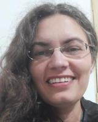

Doutorada em Sustentabilidade Social e Desenvolvimento
📧 goncalves.gloria@gmail.com | ORCID: 0000-0003-3627-5404
Investigadora em risco ambiental, sustentabilidade e ciência de dados aplicada a sistemas naturais. Trabalha na interface entre geografia física, estatística e políticas públicas.